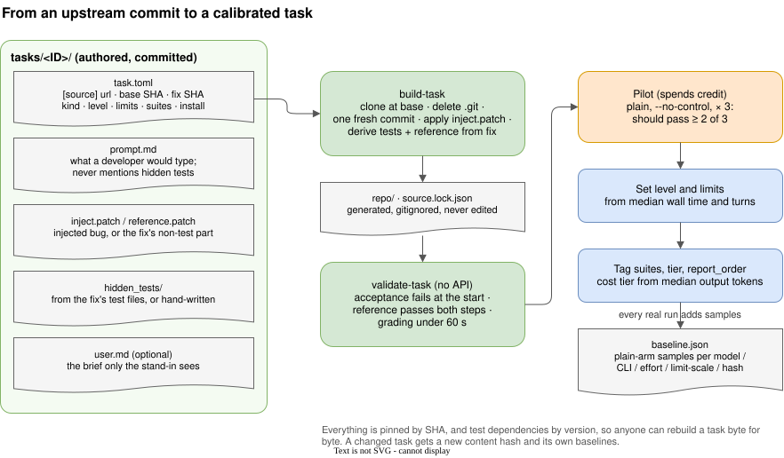
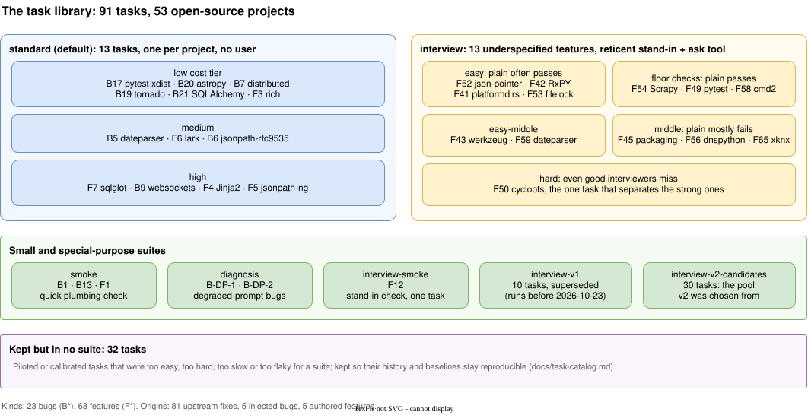
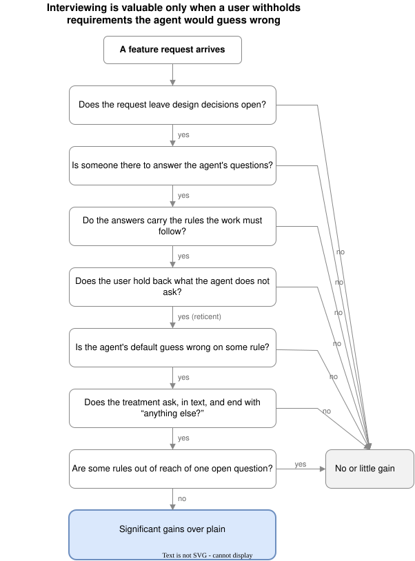

The task library
91 coding tasks from 53 open-source Python projects, grouped into suites. Every task is pinned by commit SHA, so anyone can rebuild it exactly and rerun a published result.
What a task is
A task is one coding job that both arms attempt: a bug to diagnose and fix (B*) or a feature to
build (F*). The agent gets a prompt written the way a developer would write it, and is graded
afterwards by hidden tests it never sees.
- Upstream fix (81 tasks): the task starts at the parent of a real fix commit in a public repository. The fix's test changes become the hidden tests and the rest becomes the reference solution. The prompt is rewritten from the original issue, without hints the reporter couldn't have had.
- Injected bug (5): a small, plausible mistake written by the task author on a released version; it can't be in any training set.
- Authored feature (5): a feature written for hai-proof, with hand-written tests.
A bug task tests diagnosis: its difficulty comes from a symptom far from the cause, a vague report or a need to reproduce, not from a large fix. Long implementation work belongs in a feature task. The level (1–3) sets the time, turn and budget limits; the cost tier (low, medium, high), from median output tokens, orders the report.

build-taskclones the repository at the base commit, deletes its git history, makes one fresh commit (so the fix can't be found in history), and derives the hidden tests and reference patch from the fix.validate-taskproves the task is well formed with no API spend: the hidden tests fail at the start state, the reference solution passes both grading steps, and grading takes under a minute.- A pilot of plain Claude Code (three runs) should pass at least two. A task nobody solves measures luck, not the treatment.
- Test dependencies are pinned to the versions a task was validated with where new releases broke it (F7, F30, F31, F53, F54), so a rebuilt image can't change the grading between arms or runs.
Contamination is accepted knowingly: the model may have seen a public repository, but both arms share the same model and the same memory, and memorisation compresses differences rather than inventing them.
Suites

standard: the default
Thirteen tasks, one per project, chosen to show large effects with nobody in the loop. Tasks with mixed plain pass rates (B6, B7, B19, B21, F7) carry the success signal; steady multi-minute tasks (B5, B9, B17, F4, F5) carry the time and cost signal. One rep takes about $12 and 1.9 hours per arm on Sonnet.
| Task | Project | Kind · level | Tier | Plain pass | Median wall |
|---|---|---|---|---|---|
| B17 | pytest-xdist: --dist=loadgroup hangs after a worker crash | bug · L2 | low | 8/8 | 442 s |
| B20 | astropy: indexed MaskedColumn slicing leaks memory | bug · L1 | low | 11/11 | 126 s |
| B7 | dask/distributed: retire/rebalance hangs with nothing logged | bug · L2 | low | 4/10 | 174 s |
| B19 | tornado: sockets leak after connect timeouts | bug · L2 | low | 4/8 | 532 s |
| B21 | SQLAlchemy: cancelled async close leaks connections | bug · L2 | low | 6/11 | 276 s |
| F3 | rich: line, row and child limits | feature · L3 | low | 8/8 | 161 s |
| B5 | dateparser: not thread-safe | bug · L3 | medium | 11/11 | 485 s |
| F6 | lark: Lark.scan() | feature · L3 | medium | 8/8 | 230 s |
| B6 | python-jsonpath-rfc9535: a refactor broke compliance | bug · L2 | medium | 3/8 | 212 s |
| F7 | sqlglot: the Python executor evaluates subqueries | feature · L3 | high | 5/8 | 1072 s |
| B9 | websockets: closed connections freed only by the cyclic GC | bug · L3 | high | 7/8 | 829 s |
| F4 | Jinja2: a match statement | feature · L3 | high | 8/8 | 520 s |
| F5 | jsonpath-ng: a strict RFC 9535 module | feature · L3 | high | 7/7 | 1617 s |
Plain pass counts are from the calibration backfill on claude-sonnet-5-5; the full per-task details
(cause, grading, limits) are in docs/suites.md.
interview: does the agent ask the right questions?
Thirteen feature requests whose prompts deliberately leave the decisive behaviour open. The rules live in each
task's user.md, which only the user stand-in sees, and the hidden tests pin them. An agent that doesn't
ask, or doesn't ask about the right points, guesses and usually fails. The tasks declare their own setup: a
reticent stand-in with strict filtering and full answers to the ask tool, so a run needs
--user reticent --ask-tool on, and nobody-answering runs are refused.
Over the 13 tasks at five reps on Sonnet 5.5, plain passed 37/65, a short "ask in plain text, then ask whether anything else matters" CLAUDE.md (interview-catchall) 60/65, a longer interviewing guide 59/65 and the superpowers plugin 40/65. The suite separates "interviews" from "doesn't" by wide margins; only F50 separates two good interviewers.

Smaller suites
| Suite | Tasks | Use |
|---|---|---|
smoke | B1, B13, F1 | a cheap check that a treatment loads and acts before a real run |
diagnosis | B-DP-1, B-DP-2 | bugs reported with degraded prompts, for prompt-quality experiments |
interview-smoke | F12 | checks the stand-in and ask-tool plumbing on a host, one task |
interview-v1 | 10 tasks | the first interview set, superseded on 2026-10-23 and kept for earlier runs |
interview-v2-candidates | 30 tasks | the pool the current interview set was chosen from |
Thirty-two tasks belong to no suite: piloted tasks that turned out too easy, too hard, too slow or too flaky. They stay so their history and baselines remain reproducible; the task catalog records why each was built, kept or dropped.
Your own tasks
Tasks from your own repositories, including private ones, go in the gitignored private/tasks/ and
are found automatically; tag them with your own suite name and run them with --suite <name>.
Projects in other languages install their toolchain in a task.Dockerfile and grade with an
acceptance_cmd. The hai-proof-task skill does this for you, and
docs/task-authoring.md
is the schema.